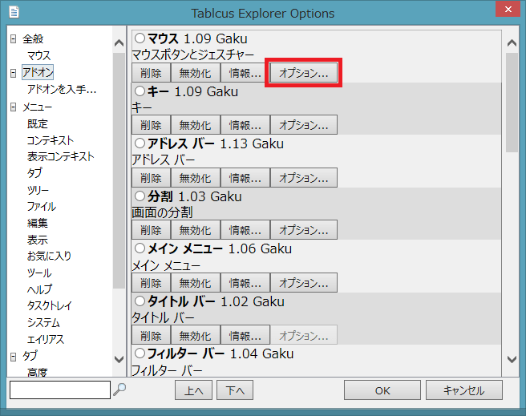
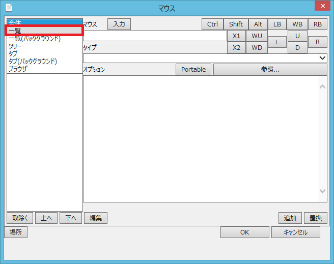
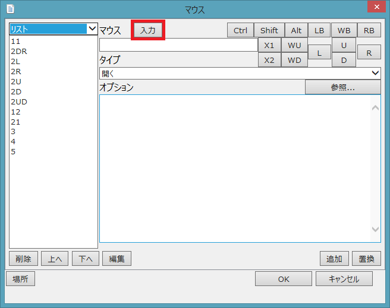
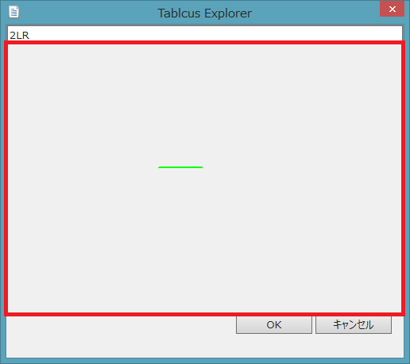
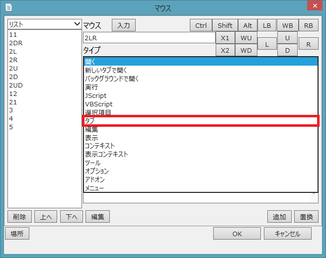
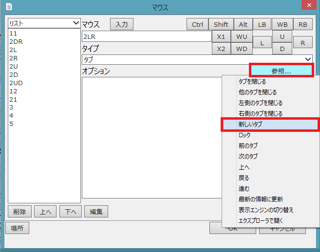
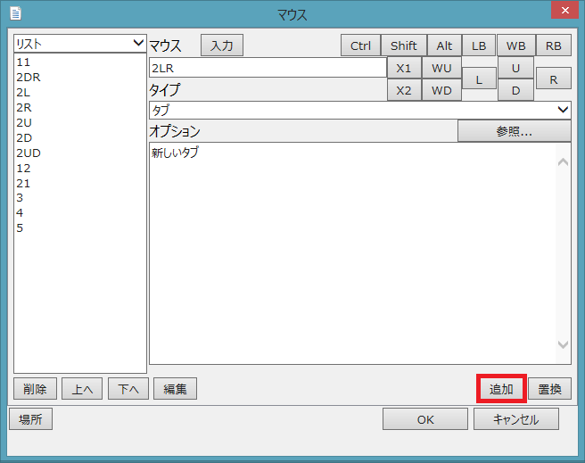
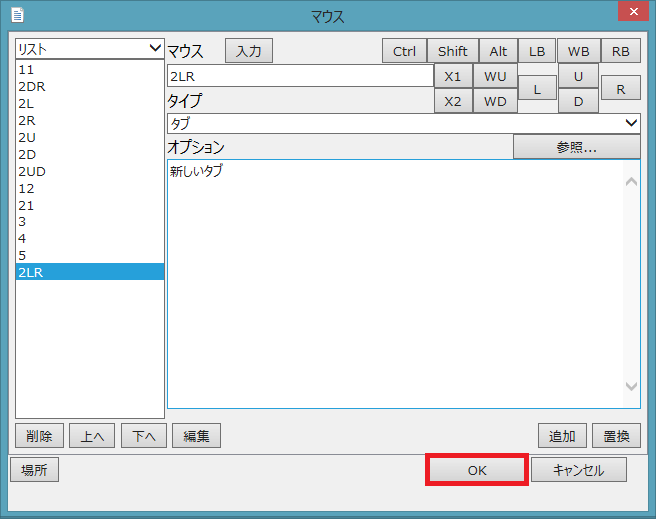

|
Tablacus Explorer マウスのカスタマイズ方法
|

|
Tablacus Explorerのマウスのカスタマイズはアドオンのマウスのオプションから設定します。
リスト上でのマウスジェスチャ「右ボタンを押しながら左に移動してから右に移動」に「新しいタブで開く」を割り当ててみましょう。
ツール→アドオンを選択します。

マウスの「オプション...」を押します。アドオンが探す場合に左下の入力欄と虫眼鏡で検索することができます。

まず、マウスジェスチャの場所を設定します。左上の「全体▼」となっている場所をクリックして「リスト」選びます。
「全体」はTablacus Explorer全体で有効
「一覧」はリスト上で有効
「一覧(バックグラウンド)」はリスト上で選択のない場合に有効
「ツリー」はツリー上で有効
「タブ」はタブ上で有効
「タブ(バックグラウンド)」はタブ上のタブのない場所で有効
「ブラウザ」はアドレスバーやツールバーなどリスト、ツリー、タブ以外の場所で有効

「入力」ボタンを押します。

入力ダイアログが表示されたら、ダイアログの上で右ボタンを押して左に移動して右に移動するマウスジェスチャを行って下さい。
上の欄に「2LR」と入力されるので「OK」をマウスで押して下さい。

1:左ボタン、2:右ボタン、3:ホイールボタン、4:X1ボタン、5:X2ボタン、8:ホイール上回転、9:ホイール下回転
L:左ジェスチャ、R:右ジェスチャ、U:上ジェスチャ、D:下ジェスチャ
S:Shiftを押しながらジェスチャ、C:Ctrlを押しながらジェスチャ、A:Altを押しながらジェスチャ
タイプを「タブ」に変更します。

オプションの「参照...」を押して「新しいタブ」を選びます。

「追加」をクリックして「2LR」の設定を追加します。

「OK」をクリックしてキーのアドオンのオプションを閉じます。

アドオン画面で「OK」をクリックすると完了です。